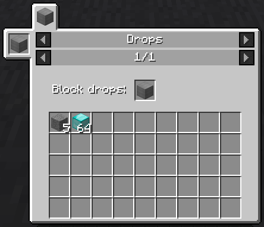
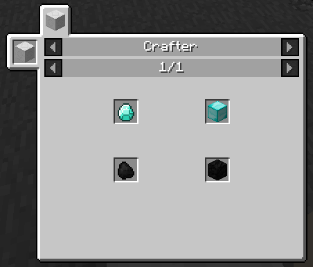

Интеграция с Just Enough Itemslink
Автор статьи — Doc.
Рабочий тестовый мод с материалами данной статьи можно скачать здесь.
Данный мини-ресурс дает поддержку Just Enough Items (JEI) для Вашего мода. Рассчитан на тех, кто может сам зарегистрировать мод/блок/итем/модель. Много информации расписано в самих классах.
Начнем.
Для начала мы импортируем сам мод в IDE. В gradlew.build добавим это:
repositories {
maven { // Мавен, который поддерживает JEI.
name = "Progwml6 maven"
url = "http://dvs1.progwml6.com/files/maven"
}
maven { // Мавен, который поддерживает JEI, для резерва.
name = "ModMaven"
url = "modmaven.k-4u.nl"
}
}
dependencies { // Добавляем сам JEI.
deobfProvided "mezz.jei:jei_${mc_version}:${jei_version}:api"
runtime "mezz.jei:jei_${mc_version}:${jei_version}"
}
${mc_version} и ${jei_version} можно либо заменить на ту, что нужно, либо же для удобства добавить эти переменные в gradle.properties:
mc_version=1.12.2
jei_version=4.8.5.137
Далее рассмотрим классы. Базовые классы, которые нужны для регистрации мода/блока/предмета/модели рассматривать не будем. (#МыЖНеНубы)
Рассмотрим блок, на примере которого будем делать свою поддержку для JEI. Сам по себе блок - добавляет дроп земли (5 шт) и алмазных блоков (64 шт). По стандарту - этот дроп не показывается майном. Значит нужно это нужно добавить самим.
// BlockDrops.java
package xzchtoeto;
import net.minecraft.block.Block;
import net.minecraft.block.material.Material;
import net.minecraft.block.state.IBlockState;
import net.minecraft.client.renderer.block.model.ModelResourceLocation;
import net.minecraft.creativetab.CreativeTabs;
import net.minecraft.init.Blocks;
import net.minecraft.item.Item;
import net.minecraft.item.ItemStack;
import net.minecraft.util.NonNullList;
import net.minecraft.util.math.BlockPos;
import net.minecraft.world.IBlockAccess;
import net.minecraftforge.client.model.ModelLoader;
import net.minecraftforge.fml.relauncher.Side;
import net.minecraftforge.fml.relauncher.SideOnly;
public class BlockDrops extends Block {
public BlockDrops() {
super(Material.GROUND); // Материал блока.
setCreativeTab(CreativeTabs.REDSTONE); // Креативная вкладка.
setRegistryName(TestMod.MODID, "drop"); // Название блока при регистрации.
setUnlocalizedName(TestMod.MODID + ".drop"); // Название нелокализированного блока.
}
@Override // Дропы, которые получим при ломании блока.
public void getDrops(NonNullList<ItemStack> drops, IBlockAccess world, BlockPos pos, IBlockState s, int f) {
drops.clear(); // Отчищаем возможные дропы, если они есть.
drops.add(new ItemStack(Blocks.STONE, 5)); // Добавляем свой дроп.
drops.add(new ItemStack(Blocks.DIAMOND_BLOCK, 64)); // Добавляем свой дроп.
}
@SideOnly(Side.CLIENT)
public void initModel() { // Модель блока
ModelLoader.setCustomModelResourceLocation(Item.getItemFromBlock(this), 0,
new ModelResourceLocation(getRegistryName(), "inventory"));
}
}
Рассмотрим класс, который добавляет поддержку JEI.
// JEIPluginTM.java
package xzchtoeto.jei;
import com.google.common.collect.Lists;
import mezz.jei.api.IModPlugin;
import mezz.jei.api.IModRegistry;
import mezz.jei.api.JEIPlugin;
import mezz.jei.api.ingredients.IIngredientBlacklist;
import mezz.jei.api.recipe.IRecipeCategoryRegistration;
import net.minecraft.init.Blocks;
import net.minecraft.item.ItemStack;
import xzchtoeto.TMRegistry;
import xzchtoeto.jei.drops.DropsRecipeCategory;
import xzchtoeto.jei.drops.DropsRecipeWrapper;
@JEIPlugin // Сам JEI плагин.
public class JEIPluginTM implements IModPlugin {
@Override
public void registerCategories(IRecipeCategoryRegistration registry) { // Регистрация категории, которая будет показываться в MC.
registry.addRecipeCategories(new DropsRecipeCategory(registry.getJeiHelpers().getGuiHelper()));
}
@Override
public void register(IModRegistry registry) {
registry.addRecipes(Lists.newArrayList(new DropsRecipeWrapper()), DropsRecipeCategory.UID); // Регистрация рецептов для Вашего UID.
registry.addRecipeCatalyst(new ItemStack(TMRegistry.blockDrops), DropsRecipeCategory.UID); // Регистрация показывающихся блоков для Вашего UID.
IIngredientBlacklist blackList = registry.getJeiHelpers().getIngredientBlacklist(); // Блек лист для JEI, используемый для скрытия предметов.
blackList.addIngredientToBlacklist(new ItemStack(Blocks.DIRT)); // Скрытие блока земли из JEI.
}
}
Если Вам нужно больше рецептов - делаем цикл и не много изменяем класс DropsRecipeWrapper.
Далее рассмотрим класс, который добавляет рецепт.
// DropsRecipeWrapper
package xzchtoeto.jei.drops;
import mezz.jei.api.ingredients.IIngredients;
import mezz.jei.api.recipe.IRecipeWrapper;
import net.minecraft.item.ItemStack;
import net.minecraft.util.NonNullList;
import xzchtoeto.TMRegistry;
public class DropsRecipeWrapper implements IRecipeWrapper {
private ItemStack input; // Объявление входного предмета для рецепта.
private NonNullList<ItemStack> outputs; // Объявление выходного листа для рецепта.
public DropsRecipeWrapper() { // Сам рецепт. Так же можно передавать сюда свои рецепты и разбирать его на входные/выходные предметы.
input = new ItemStack(TMRegistry.blockDrops); // Собственно сам входной предмет.
outputs = NonNullList.create(); // Делаем лист.
TMRegistry.blockDrops.getDrops(outputs, null, null, null, 0); // Получаем все дропы с блока и заносим в созданный ранее лист.
}
@Override
public void getIngredients(IIngredients ingredients) { // Ингридиенты рецепта.
ingredients.setInput(ItemStack.class, input); // Входные ингридиенты.
ingredients.setOutputs(ItemStack.class, outputs); // Выходные ингридиенты.
}
public ItemStack getInput() {
return input;
}
public NonNullList<ItemStack> getOutputs() {
return outputs;
}
}
Идем далее. Рассмотрим класс, который добавляет ту самую категорию, которая будет видна в JEI.
// DropsRecipeCategory.java
package xzchtoeto.jei.drops;
import mezz.jei.api.IGuiHelper;
import mezz.jei.api.gui.IDrawable;
import mezz.jei.api.gui.IDrawableStatic;
import mezz.jei.api.gui.IGuiItemStackGroup;
import mezz.jei.api.gui.IRecipeLayout;
import mezz.jei.api.ingredients.IIngredients;
import mezz.jei.api.recipe.IRecipeCategory;
import net.minecraft.client.Minecraft;
import net.minecraft.item.ItemStack;
import net.minecraft.util.ResourceLocation;
import xzchtoeto.TestMod;
public class DropsRecipeCategory implements IRecipeCategory<DropsRecipeWrapper> {
public static final String UID = TestMod.MODID + ":drops"; // Сам UID рецепт.
private final IDrawableStatic bg; // "Background"
public DropsRecipeCategory(IGuiHelper h) {
bg = h.createDrawable(new ResourceLocation(TestMod.MODID, "textures/gui/jei_drops.png"), 0, 0, 166, 128); // Объявление background'а.
// Текстура должна быть своя. Переменные - 0, 0 - начало, 166, 128 сама текстура. (Вроде бы)
}
@Override
public String getUid() { // UID рецепта.
return UID;
}
@Override
public String getTitle() { // Название вкладки в MC, можно использовать I18n переводчик.
return "Drops";
}
@Override
public String getModName() { // Название мода.
return TestMod.MODNAME;
}
@Override
public IDrawable getBackground() {
return bg;
}
@Override
public void drawExtras(Minecraft mc) { // Любые надписи, которые будут на каждом рецепте.
// Все координаты идут относительно самого рецепта. Все width и height рассчитывать не нужно.
mc.fontRenderer.drawString("Block drops:", 5, 13, 0xffffffff, true);
}
@Override
public void setRecipe(IRecipeLayout layout, DropsRecipeWrapper recipes, IIngredients ingredients) {
IGuiItemStackGroup isg = layout.getItemStacks(); // Группа ItemStack, которая нужна для рендера.
// Все координаты идут относительно самого рецепта. Все width и height рассчитывать не нужно.
isg.init(0, true, 74, 9); // Инициализируем слот 0. true/false - это обозначение того, является ли слот *ВХОДНЫМ*, true - да, false - нет. Остальные 2 числа - координаты. X/Y.
isg.set(0, recipes.getInput()); // Добавляем в слот 0 входной предмет.
int slotIndex = 1;
for (int i = 0; i < recipes.getOutputs().size(); i++) { // Циклом пробегаем массив всех выходных предметов рецепта.
final int slotX = 2 + i % 9 * 18; // Координаты слота по X. По дефолту - 2, после изменяется в зависимости от i.
final int slotY = 36 + i / 9 * 18; // Координаты слота по Y. По дефолту - 36, после изменяется в зависимости от i.
ItemStack output = recipes.getOutputs().get(i); // Получаем элемент из массива дропа блока.
isg.init(slotIndex + i, false, slotX, slotY); // Инициализируем слот (slotIndex). true/false - это обозначение того, является ли слот *ВХОДНЫМ*, true - да, false - нет. Остальные 2 числа - координаты. X/Y.
isg.set(slotIndex + i, output); // Добавляем в слот (slotIndex) выходной предмет.
}
}
}
В итоге получаем такую картину: 
Но, мы захотели создать не просто блок с своим дропом, а целый механизм!
Займемся рецептами:
// CrafterRecipe.java
package xzchtoeto.crafter;
import java.util.ArrayList;
import java.util.List;
import net.minecraft.block.Block;
import net.minecraft.init.Blocks;
import net.minecraft.init.Items;
import net.minecraft.item.Item;
import net.minecraft.item.ItemStack;
public class CrafterRecipe {
private static List<CrafterRecipe> recipes = new ArrayList<CrafterRecipe>(); // Лист всех рецептов.
public static List<CrafterRecipe> getRecipes() { // Получатель всех рецептов.
return recipes;
}
private final ItemStack input, output; // Компоненты крафта.
public CrafterRecipe(ItemStack input, ItemStack output) { // Конструктор рецепта.
this.input = input;
this.output = output;
}
public ItemStack getInput() { // Получатель входного предмета рецепта.
return input;
}
public ItemStack getOutput() { // Получатель выходного предмета рецепта.
return output.copy();
}
public static CrafterRecipe addRecipe(ItemStack input, ItemStack output) { // Метод добавления рецепта.
CrafterRecipe recipe = new CrafterRecipe(input, output); // Создаем рецепт.
if (recipes.contains(recipe)) // Если он есть уже в рецептах - игнорим.
return null;
recipes.add(recipe); // Если же нет - добавляем.
return recipe;
}
public static CrafterRecipe getRecipe(ItemStack is) { // Получатель рецепта через входной предмет.
if (is == null || is.isEmpty())
return null;
for (CrafterRecipe recipe : recipes) // Проходим по списку всех рецептов.
if (recipe.matchesInput(is)) // Сравниваем входные элементы.
return recipe; // Возвращаем рецепт, если входные элементы одинаковые.
return null;
}
public boolean matchesInput(ItemStack is) {
return is.getItem() == input.getItem();
}
public static void initRecipes() { // Метод регистрации рецептов.
addRecipe(is(Items.DIAMOND), is(Blocks.DIAMOND_BLOCK));
addRecipe(is(Items.COAL), is(Blocks.COAL_BLOCK));
}
private static ItemStack is(Item item) { // Побочный метод.
return new ItemStack(item);
}
private static ItemStack is(Block block) { // Побочный метод.
return new ItemStack(block);
}
}
Метод инициализации можно вызывать в любой стадии инициализации мода. (вроде бы, я юзаю в preInit)
Далее сам блок. Рассмотрим только метод добавления предмета в тайл, ибо остальное (регистрацию) Вы должны знать сами. (P.S. Не забудьте добавить, что он имеет тайл) Этот блок получает предмет, проверяется рецепт, дропает выходной итем рецепта. Все это можно было организовать и без тайла, но для примера он с тайлом.
// CrafterBlock.java
@Override
public boolean onBlockActivated(World w, BlockPos pos, IBlockState s, EntityPlayer p, EnumHand h, EnumFacing f,
float hitX, float hitY, float hitZ) {
if (!w.isRemote && !p.isSneaking() && h != EnumHand.OFF_HAND) { // Проверка на сервер сторону, что игрок без шифта, что это главная рука.
CrafterTileEntity te = (CrafterTileEntity) w.getTileEntity(pos); // Получаем тайл
if (te == null)
return false;
ItemStack hand = p.getHeldItem(h).copy(); // Получаем is для возврата итема в руку.
CrafterRecipe recipe = CrafterRecipe.getRecipe(hand); // Получаем рецепт для предпологаемого рецепта.
if (recipe == null) // Проверяем, что есть рецепт.
return false;
ItemStack put = p.getHeldItem(h).copy(); // Получаем is для тайла.
hand.shrink(1); // Отнимаем 1 шт.
put.setCount(1); // Устанавливаем 1 шт.
te.setInventorySlotContents(0, put); // Помещаем в тайл.
p.setHeldItem(h, hand); // Устанавливаем возвращенный is.
}
return true;
}
Далее - тайл. Сам тайл был копией печки, но с поправкой - убраны времена, переплавка, изменен update. Его и рассмотрим.
// CrafterTileEntity.java
@Override
public void update() {
if (getWorld().isRemote) // Если клиент - то нечего.
return;
CrafterRecipe recipe = CrafterRecipe.getRecipe(getStackInSlot(0));
if (recipe == null) { // Если рецепта нету - выбрасываем итем.
dropItem(getStackInSlot(0));
return;
}
decrStackSize(0, 1); // Если рецепт есть - изымаем из тайла 1 предмет. Хотя, можно установить просто EMPTY в слот.
dropItem(recipe.getOutput()); // и выбрасываем выходной предмет.
}
private void dropItem(ItemStack is) { // Мини метод для дропа блока.
getWorld().spawnEntity(new EntityItem(getWorld(), getPos().getX() + 0.5D, getPos().getY() + 0.5D, getPos().getZ() + 0.5D, is));t
}
Дальше собственно идет поддержка, ибо с блоком мы закончили. Рассмотрим класс, который добавляет рецепт.
// CrafterRecipeWrapper.java
package xzchtoeto.jei.crafter;
import mezz.jei.api.ingredients.IIngredients;
import mezz.jei.api.recipe.IRecipeWrapper;
import net.minecraft.item.ItemStack;
import xzchtoeto.crafter.CrafterRecipe;
public class CrafterRecipeWrapper implements IRecipeWrapper {
private ItemStack input; // Объявление входного предмета для рецепта.
private ItemStack output; // Объявление выходного листа для рецепта.
public CrafterRecipeWrapper(CrafterRecipe recipe) { // Сам рецепт. Так же можно передавать сюда свои рецепты и разбирать его на входные/выходные предметы.
input = recipe.getInput(); // Собственно сам входной предмет.
output = recipe.getOutput(); // Собственно сам выходной предмет.
}
@Override
public void getIngredients(IIngredients ingredients) { // Ингридиенты рецепта.
ingredients.setInput(ItemStack.class, input); // Входные ингридиенты.
ingredients.setOutput(ItemStack.class, output); // Выходные ингридиенты.
}
public ItemStack getInput() {
return input;
}
public ItemStack getOutput() {
return output;
}
}
Рассмотрим класс, который добавляет ту самую категорию, которая будет видна в JEI.
// CrafterRecipeCategory.java
package xzchtoeto.jei.crafter;
import mezz.jei.api.IGuiHelper;
import mezz.jei.api.gui.IDrawable;
import mezz.jei.api.gui.IDrawableStatic;
import mezz.jei.api.gui.IGuiItemStackGroup;
import mezz.jei.api.gui.IRecipeLayout;
import mezz.jei.api.ingredients.IIngredients;
import mezz.jei.api.recipe.IRecipeCategory;
import net.minecraft.client.Minecraft;
import net.minecraft.util.ResourceLocation;
import xzchtoeto.TestMod;
public class CrafterRecipeCategory implements IRecipeCategory<CrafterRecipeWrapper> {
public static final String UID = TestMod.MODID + ":crafter"; // Сам UID рецепт.
private final IDrawableStatic bg; // "Background"
public CrafterRecipeCategory(IGuiHelper h) {
bg = h.createDrawable(new ResourceLocation(TestMod.MODID, "textures/gui/jei_crafter.png"), 0, 0, 100, 34); // Объявление background'а.
}
@Override
public String getUid() { // UID рецепта.
return UID;
}
@Override
public String getTitle() { // Название вкладки в MC, можно использовать I18n переводчик.
return "Crafter";
}
@Override
public String getModName() { // Название мода.
return TestMod.MODNAME;
}
@Override
public IDrawable getBackground() {
return bg;
}
@Override
public void drawExtras(Minecraft mc) { // Любые надписи, которые будут на каждом рецепте.
// Все координаты идут относительно самого рецепта. Все width и height рассчитывать не нужно.
// mc.fontRenderer.drawString("Block drops:", 5, 13, 0xffffffff, true);
}
@Override
public void setRecipe(IRecipeLayout layout, CrafterRecipeWrapper recipes, IIngredients ingredients) {
IGuiItemStackGroup isg = layout.getItemStacks(); // Группа ItemStack, которая нужна для рендера.
// Все координаты идут относительно самого рецепта. Все width и height рассчитывать не нужно.
isg.init(0, true, 8, 8); // Инициализируем слот 0. true/false - это обозначение того, является ли слот *ВХОДНЫМ*, true - да, false - нет. Остальные 2 числа - координаты. X/Y.
isg.set(0, recipes.getInput()); // Добавляем в слот 0 входной предмет.
isg.init(1, false, 74, 8); // Инициализируем слот 1. true/false - это обозначение того, является ли слот *ВХОДНЫМ*, true - да, false - нет. Остальные 2 числа - координаты. X/Y.
isg.set(1, recipes.getOutput()); // Добавляем в слот 1 выходной предмет.
}
}
И наконец, добавляем его в регистрацию. В Ваш плагин в метод registerCategories добавляем:
registry.addRecipeCategories(new CrafterRecipeCategory(registry.getJeiHelpers().getGuiHelper()));
И в метод register добавляем:
registry.addRecipes(CrafterRecipe.getRecipes(), CrafterRecipeCategory.UID); // Регистрация рецептов для Вашего UID.
registry.handleRecipes(CrafterRecipe.class, recipe -> new CrafterRecipeWrapper(recipe), CrafterRecipeCategory.UID); // Регистрация рецептов из листа рецептов.
registry.addRecipeCatalyst(new ItemStack(TMRegistry.blockCrafter), CrafterRecipeCategory.UID); // Регистрация показывающихся блоков для Вашего UID.
В итоге получаем такую картину: 
На этом все. Спасибо за внимание.
P.S. Данная поддержка работает только с теми вещами, что укажите именно Вы. Ничего более она добавлять не будет. С большой вероятностью, Ваш код поддержки не затронет другие моды, т.к. это сделать можно, но если делать качественно - все будет куда лучше.